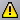

The Accelerated Event Notification client can have one of three possible states, and uses icons to depict its state.
The possible states and associated icons are as follows:
| Icon | State |
|---|---|
| Connected | |
| You have Messages | |
 |
Not Connected |
The following table shows examples of how these icons are represented on your screen.
|
UNIX |
Icon shown in a floating notifier panel |
|
Windows |
 Icon shown in the Windows system tray |